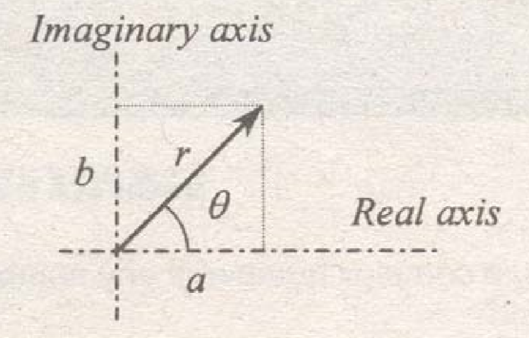

By definition, a complex number is any number expressible in the standard form $a+bi$ or $a+bj$.
where:
$i \ or \ j=\sqrt{-1}$
$i^{2} \ or \ j^{2} = -1$
Example: Solve the solution of $x^{2}+1=0$.
Simplifying we get $x = \pm \sqrt{-1}$
Thus the solutions are i and -i.
Successive integral powers of i or j
...etc
Rectangular form
$z=a+bj$
where: a = real part, b = imaginary part
Trigonometric form
$z=r\cos\theta+jr\sin\theta$
$z=r\cos\theta$
Polar form
$z=r\angle\theta$
$r=\sqrt{a^{2}+b^{2}}$
$\theta=\tan^{-1}\frac{b}{a}$

where: r = modulus or absolute value
$\theta$ = argument or amplitude on degrees
Exponential form
$x=re^{j\theta}$
where: $\theta$ = argument in radians
Addition and Subtraction of complex numbers
Rule: Use the rectangular form
$$(a_{1} + jb_{1})+(a_{2}+jb_{2})=(a_{1}+a_{2})+j(b_{1}+b_{2})$$
$$(a_{1} + jb_{1})-(a_{2}+jb_{2})=(a_{1}-a_{2})+j(b_{1}-b_{2})$$
Multiplication of complex numbers
Rule: Use the polar form
$$(r_{1}\angle\theta_{1})(r_{2}\angle\theta_{2})=r_{1}r_{2}\angle(\theta_{1}+\theta_{2})$$
Rule: Use the polar form
$$\frac{r_{1}\angle\theta_{1}}{r_{2}\angle\theta_{2}}=\frac{r_{1}}{r_{2}}\angle(\theta_{1}-\theta_{2})$$
Complex number raised to exponent "n"
Rule: Use the polar form
$$(r\angle\theta)^{n}=r^{n}\angle(n\theta)$$
nth root of a complex number
Rule: Use the polar form
$$(r\angle\theta)^{\frac{1}{n}}=r^{\frac{1}{n}}\angle\frac{\theta+k(360^{\circ})}{n}$$
where:
k = 0, first root or principal root
k = 1, second root
k = 2, third root
k = n - 1, nth root
Logarithm of a complex number
Rule: Use the trigonometric form
$$\ln z=re^{j\theta}=\ln r+ \ln e^{j\theta}$$
$$\ln z=\ln r+j\theta$$
Exponential & trigonometric functions of a complex number
$$e^{\theta j}=\cos\theta+\sin\theta j$$
$$e^{-\theta j}=\cos\theta-\sin\theta j$$
$$\sin\theta=\frac{e^{j\theta}-e^{-j\theta}}{2j}$$
$$\cos\theta=\frac{e^{j\theta}+e^{-j\theta}}{2}$$
note: $\tan\theta = \frac{\sin\theta}{\cos\theta}$
$\cot\theta=\frac{\cos\theta}{\sin\theta}$
$\sec\theta=\frac{1}{\cos\theta}$
$\csc\theta=\frac{1}{\sin\theta}$
Hyperbolic functions
$$\sinh\theta=\frac{e^{\theta}-e^{-\theta}}{2}$$
$$\cosh\theta=\frac{e^{\theta}+e^{-\theta}}{2}$$
note: $\tanh\theta=\frac{\sinh\theta}{\cosh\theta}$
$\coth\theta=\frac{\cosh\theta}{\sinh\theta}$
$\text{sech}\theta=\frac{1}{\cosh\theta}$
$\text{csch}\theta=\frac{1}{\sinh\theta}$
Inverse trigonometric functions of complex numbers
$$\sinh^{-1}z=-j\ln\left ( jz\pm \sqrt{1-z^{2}} \right )$$
$$\cosh^{-1}z=-j\ln\left ( z\pm \sqrt{z^{2}-1} \right )$$
$$\tanh^{-1}z=\frac{-j}{2}\ln\left ( \frac{1+jz}{1-jz} \right )$$
Inverse hyperbolic functions of complex numbers
$$\sinh^{-1}z=\ln\left ( z\pm \sqrt{z^{2}+1} \right )$$
$$\cosh^{-1}z=\ln\left ( z\pm \sqrt{z^{2}-1} \right )$$
$$\tanh^{-1}z=\frac{1}{2}\ln\left ( \frac{1+z}{1-z} \right )$$
Matrix is a rectangular array of real numbers arranged in m rows and n columns. The term "matrix" was introduced by the English mathematician James Joseph Sylvester (1814-1897) in 1850. The size of a matrix is determined by the number of rows and columns. The expression "m x n" is the dimension or order of the matrix. If the matrix has only one column, it is called a column matrix and if it has only one row, it is called a row matrix. The following is a 3 x 3 matrix or square matrix (i.e. 3 rows and 3 columns).
$$A=\begin{bmatrix}
6 & 5 & 4\\
2 & 1 & 4\\
3 & -2 & -2
\end{bmatrix}$$
The first non-zero entry in a row of a matrix is known as the leading entry or the leading element. In the matrix above, 6 is the leading entry. The diagonal from the upper-left to the lower right is called the principal diagonal or main diagonal and all entries in the said diagonal are called as diagonal entries.
If all entries in a matrix above the main diagonal are zero, then it is said to be a lower triangular matrix, and if all the entries below the main diagonal are zero, the matrix is referred to as the upper diagonal matrix.
Lower Triangular Matrix
$$A=\begin{bmatrix}
6 & 0 & 0\\
2 & 1 & 0\\
3 & -2 & -2
\end{bmatrix}$$
Upper Triangular Matrix
$$B=\begin{bmatrix}
6 & 5 & 4\\
0 & 1 & 4\\
0 & 0 & -2
\end{bmatrix}$$
Diagonal Matrix
$$C=\begin{bmatrix}
6 & 0 & 0\\
0 & 1 & 0\\
0 & 0 & -2
\end{bmatrix}$$
Two matrices are said to be equal if and only if there orders are equal and their corresponding elements are equal.
Example: Matrices B and C are equal. $$B=\begin{bmatrix}
3 & 2\\
2 & -1
\end{bmatrix} \ \ \ \ \ \ \ \ \ \ C=\begin{bmatrix}
3 & 2\\
2 & -1
\end{bmatrix}$$
Sum of two matrices:
If A and B are two matrices of the same order, the sum of A and B, denoted by A + B, is the matrix for which each of its elements is the sum of the corresponding elements of A and B.
Example: Find A + B. $$A=\begin{bmatrix}
5 & -2 & 6\\
-1 & 8 & -3
\end{bmatrix}\ \ \ \ \ \ \ \ B=\begin{bmatrix}
4 & 7 & 1\\
7 & 0 & 4
\end{bmatrix}$$
Solution: $$A+B=\begin{bmatrix}
5+4 & -2+7 & 6+1\\
-1+3 & 8+0 & -3-4
\end{bmatrix}=\begin{bmatrix}
9 & 5 & 7\\
2 & 8 & -7
\end{bmatrix}$$
Difference of two matrices:
If A and B are matrices having the same order, then the difference of A and B, denoted by A - B, is defined as $$A-B=A+(-B)$$
Example: Find A - B $$A=\begin{bmatrix}
4 & -3\\
-5 & -1\\
3 & 8
\end{bmatrix}\ \ \ \ \ \ \ B=\begin{bmatrix}
4 & 3\\
7 & -5\\
8 & 2
\end{bmatrix}$$
Solution: $$A-B=\begin{bmatrix}
4 & -3\\
-5 & -1\\
3 & 8
\end{bmatrix}+\begin{bmatrix}
-4 & -3\\
-7 & 5\\
-8 & -2
\end{bmatrix}=\begin{bmatrix}
0 & -6\\
-12 & 4\\
-5 & 6
\end{bmatrix}$$
Product of two matrices:
Supposed that A is a matrix of order m x p and B is a matrix of order p x n, then the product of A and B, denoted by AB, is the n x n matrix for which the element in the ith row and the jth column is the sum of the products formed by multiplying each element in the ith row of A by the corresponding element in the jth column of B.
Example: Find DC. $$D=\begin{bmatrix}
2 & -3\\
4 & -1\\
1 & 5
\end{bmatrix}\ \ \ \ \ \ \ C=\begin{bmatrix}
-4 & 1 & 3\\
-1 & 2 & 5
\end{bmatrix}$$
D is a 3 x 2 matrix and C is a 2 x 3 matrix. The product DC can be obtained because the number of columns of D (2 columns) is equal to the number of row of C (2 rows). The product DC will be a 3 x 3 matrix. $$DC=\begin{bmatrix}
2(-4)+(-3)(-1) & 2(1)+(-3)(2) & 2(3)+(-3)(5)\\
4(-4)+(-1)(-1) & 4(1)+(-1)(2) & 4(3)+(-1)(5)\\
1(-4)+5(-1) & 1(1)+5(2) & 1(3)+5(5)
\end{bmatrix}=\begin{bmatrix}
-5 & -4 & -9\\
-15 & 2 & 7\\
-9 & 11 & 28
\end{bmatrix}$$
Division of matrices
Division of matrices are done by multiplying the numerator by the inverse matrix of the denominator.
Let: $A$ and $B$ are matrices
$\frac{A}{B}=AB^{-1}$, where $B^{-1}$ is called the inverse matrix of matrix B
Transpose Matrix
If matrix A is reflected in its main diagonal, so that all rows become columns and all columns become rows without changing their relative order of entries in the rows and columns, the result is a transpose matrix, $A^{T}$.
Example: $$A=\begin{bmatrix}
-4 & 1 & 3\\
-1 & 2 & 5
\end{bmatrix}\ \ \ \ \ \ \ A^{T}=\begin{bmatrix}
-4 & -1\\
1 & 2\\
3 & 5
\end{bmatrix}$$
Cofactor of an entry of a matrix
A cofactor of an entry of a matrix is the same as the cofactor of the same entry in the determinant of the matrix and thus, is defined only for square matrices.
Sign conventions: $$\begin{bmatrix}
+ & -\\
- & +
\end{bmatrix}\ \ \ \ \ \ \ \begin{bmatrix}
+ & - & +\\
- & + & -\\
+ & - & +
\end{bmatrix}$$
Example: Find the co-factor of 6 in the following matrix. $$A=\begin{bmatrix}
1 & 2 & 0\\
2 & 1 & 4\\
4 & 2 & 6
\end{bmatrix}$$
The equivalent matrix is: $$A=+\begin{bmatrix}
1 & 2\\
2 & 1
\end{bmatrix}$$
The determinant of A is: $$\det A = \begin{vmatrix}
1 & 2\\
2 & 1
\end{vmatrix}=(1)(1)-(2)(2)=-3$$
Thus, the cofactor of 6 is -3.
Cofactor Matrix
A cofactor matrix is formed by replacing each element in the given matrix by its cofactor.
Example: Find cofactor matrix of A $$A=\begin{bmatrix}
3 & 2\\
4 & 1
\end{bmatrix}\ \ \ \ \ \ \ \text{Cofactor matrix of }A=\begin{bmatrix}
1 & 4\\
2 & 3
\end{bmatrix}$$
Inverse Matrix
Steps required to find for the inverse Matrix (say A):
Example: Find the inverse matrix of A $$A=\begin{vmatrix}
1 & 2 & 0\\
2 & 1 & 4\\
4 & 2 & 6
\end{vmatrix}$$
$$\text{Cofactor matrix }A=\begin{vmatrix}
-2 & 4 & 0\\
-12 & 6 & 6\\
8 & -4 & -3
\end{vmatrix}$$
$$(\text{Cofactor matrix }A)^{T}=\begin{vmatrix}
-2 & -12 & 0\\
4 & 6 & 6\\
0 & 6 & -3
\end{vmatrix}$$
$$\det A = \begin{vmatrix}
1 & 2 & 0\\
2 & 1 & 4\\
4 & 2 & 6
\end{vmatrix}=6$$
$$\text{Thus, }A^{-1}=\frac{1}{6}\begin{vmatrix}
-2 & -12 & 0\\
4 & 6 & 6\\
0 & 6 & -3
\end{vmatrix}$$